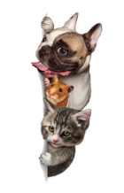
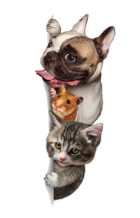
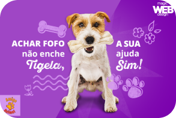
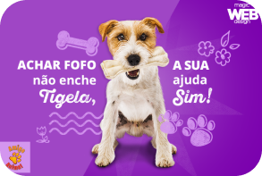

Quero Ajudar
O Amigo Não se Compra é a maior plataforma de adoção de animais do Brasil. Somos uma associação sem fins lucrativos, e através do nosso trabalho a gente conecta pessoas que querem ter um pet a cães e gatos resgatados que precisam de um lar. Desde 2012, já conseguimos transformar a vida de mais de 25 mil animaizinhos com a ajuda de voluntários e doações de pessoas que apoiam nossa causa
 

Doações via PIX ou transferência
A cada 25 reais, você ajuda 5 doguinhos ou gatinhos. Para doar, você pode fazer uma transferência bancária ou PIX:
E-mail: contato@ipet.com ou Número: (21) 979143859